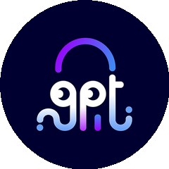

AI 风 向 标
5,769★
单日 4 个 AI 项目合计涨星
AI 居然自己干活
今日 GitHub AI 榜集体杀疯
#01今日 raw top1
Agent 操作电脑
AI替你操作电脑
cloudflare /computer
TypeScript
4775★今日 +2802
给 AI agent 配真电脑 · 点鼠标开网页填表单
#02腾讯开源
Agent 团队记忆
给AI团队装共享脑

TencentCloud /TencentDB-Agent-Memory
TypeScript
16338★今日 +1057
团队 AI 共享一个脑 · 谁学到的大家都懂
#03二十万星
Agent 工程技能
AI工程技能包

mattpocock /skills
Shell
206983★今日 +1873
真工程师的 AI 技能包 · 实战检验开源
100m80m60m40m20m
#04自主 agent 老前辈
Agent 自主完成
AI自己跑全套流程

Significant-Gravitas /AutoGPT
Python
185996★2023 自主 agent 老前辈
给个大目标 · 自己拆任务跑完整套不用人盯
你最想让谁替你干活
操作电脑
团队记忆
工程技能
自主完成
AI 风向标 · 每日更新